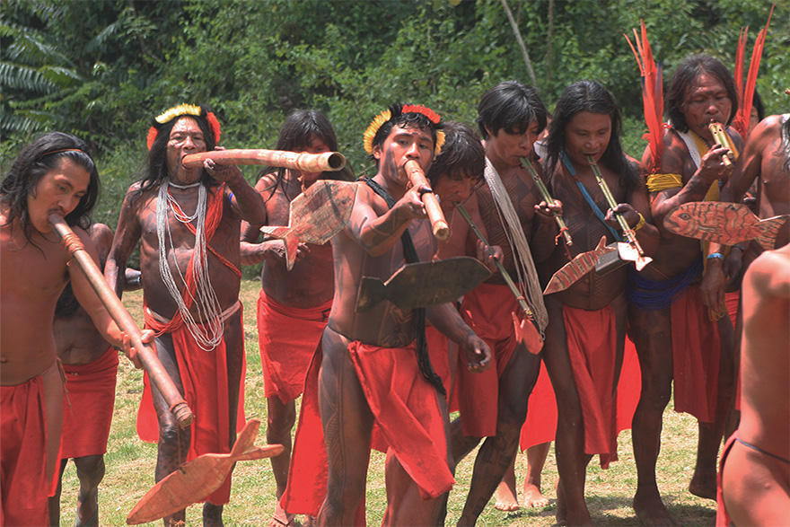

Entre importantes tradições deixadas pelos índios está a culinária. O alimento de origem indígena mais utilizado em todo o Brasil é a mandioca e suas variações, que é muito usada até hoje e aparece em pratos como o Tacacá, prato tradicional do Pará que usa a goma de tapioca e o tucupi, ambos derivados da macaxeira. o milho, usado para fazer pamonha, canjica e a popular pipoca.O milho, usado para fazer pamonha, canjica e a popular pipoca. Com relação às bebidas, o suco do açaí e o famoso guaraná, eram cultivados no norte pelo povo Mawé, e hoje rompeu fronteiras e é consumido pelo mundo todo. Pratos provindos da caça, como o picadinho de jacaré e o pato no tucupi, além de frutas como o cupuaçu e açaí fazem parte da forte cultura gastronômica do Norte do País, onde os pratos típicos estão presentes, entre eles, o tucupi, o tacacá e a maniçoba. Ervas e chás de plantas medicinais continuam sendo crenças de cura muito utilizadas, como o chá de boldo, pó de guaraná, a alfavaca e semente de sucupira.
A língua portuguesa falada no Brasil, diferente do idioma de Portugal, sofreu influência da língua tupi-guarani, de origem da união entre as tribos tupinambá e guarani. Principalmente em palavras ligadas a flora e a fauna, como: abacaxi, tatu, mandioca, caju, carioca, pipoca, jacaré, jabuti, e muitas outras palavras usadas no cotidiano de todo brasileiro.
O próprio parque Ibirapuera de São Paulo – que quer dizer “lugar que já foi mato”- ou o Rio Tietê – que significa “rio verdadeiro” – são derivados do Tupi-Guarani. Estes são grandes exemplos de como essa cultura está entrelaçada ao nosso cotidiano.
Nas expressões artísticas, as influências da cultura indígena é enorme, já que muitos povos usavam da arte em diferentes rituais, sempre com muito simbolismo envolvido.
Um grande exemplo é a pintura corporal, feita normalmente com tinta vinda de plantas e frutos (como o jenipapo e o urucu) tinha finalidade de retratar sentimentos e momentos específicos nos rituais realizados.
Outra grande herança artística deixada pelos índios, foi o artesanato, muito praticado pelos povos do Brasil, que faziam colares, pulseiras, brincos e braçadeiras, normalmente ornamentados com penas e caudas de aves, dando origem a “arte plumária”, que servia para distinguir grupos sociais.
Muitos costumes básicos do nosso povo brasileiro também tem origem na cultura indígena, como o de dormir em redes, que por sua vez ficavam dentro das ocas, ou de andar descalço quando chegamos cansados em casa.
o folclore, permaneceram as lenda como o curupira, o saci-pererê, o boitatá, a iara, dentre outros.